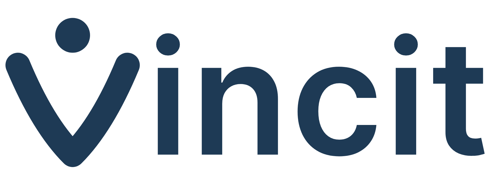

Los sistemas de RRHH están pensados para remuneraciones, asistencia y firma electrónica. Vincit los complementa y profundiza en desarrollo organizacional: clima laboral, detección de necesidades de capacitación, descripciones de cargo y formación y entrenamiento.
Cada módulo resuelve un proceso completo de gestión de personas. La estructura de la empresa se carga una sola vez y sirve para todos.
Encuestas de clima con tu propio cuestionario o uno diseñado por Labor HR, que cada persona responde desde el celular, con un enlace personal por correo o WhatsApp.
El diagnóstico se hace conversando con la gerencia y las jefaturas. Vincit ordena lo que se escucha y lo convierte en un roadmap del año.
Las descripciones se actualizan por área: la jefatura revisa, el gerente aprueba y cada trabajador confirma que conoce su versión vigente.
Coaching individual o de equipo, capacitaciones, talleres y team building: cada sesión o jornada queda registrada, con asistencia, compromisos y la evolución de las competencias de cada persona.
Tu sistema de RRHH resuelve la administración; el desarrollo organizacional suele quedar corto o repartido en herramientas sueltas. Vincit nace de la práctica de Labor HR en terreno y es la base de nuestra consultoría. Contratas la licencia, la implementamos contigo y, si te falta una pieza (un modelo de competencias, un cuestionario de clima o un diagnóstico), la diseñamos con nuestra consultoría. Después, tu equipo usa la plataforma con autonomía.
Una sola estructura de áreas, cargos y personas para todos los módulos. Las medidas de clima pasan al plan de capacitación y el diagnóstico alimenta el talento.
Favorabilidad, eNPS, validez del cuestionario, criticidad, avance y cobertura: datos para decidir, no solo para informar.
Cargamos tu estructura y configuramos la plataforma. Si ya tienes tus modelos, solo implementamos; si te falta alguno, lo complementamos con consultoría.
Cada empresa ve solo lo suyo, el anonimato del clima es real y la IA trabaja sin nombres de personas.
Entendemos tu desafío, te mostramos una demo y definimos con qué módulos partir.
Contratas la licencia y la dejamos lista con tu estructura. Si hace falta, la complementamos con consultoría.
Usan la plataforma a su ritmo y suman módulos cuando los necesiten, sin rehacer nada.
Agenda una demo y te mostramos el módulo que más te interesa, con datos de ejemplo.
¿Ya eres cliente? Ingresa a Vincit